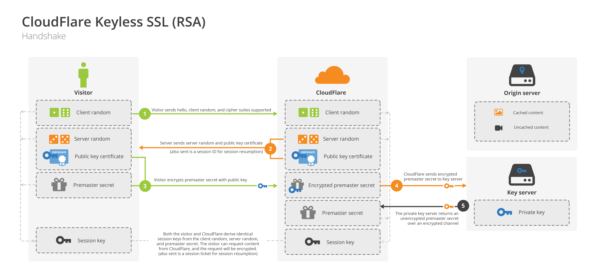

握手过程
开始加密通信之前，客户端和服务器首先必须建立连接和交换参数，这个过程叫做握手（handshake）。握手阶段分成五步。
第一步，客户端给出协议版本号、一个客户端生成的随机数（Client random），以及客户端支持的加密方法。
第二步，服务端确认双方使用的加密方法，并给出数字证书、以及一个服务器生成的随机数（Server random）。
第三步，客户端确认数字证书有效，然后生成一个新的随机数（Premaster secret），并使用数字证书中的公钥，加密这个随机数，发给服务端。
第四步，服务端使用自己的私钥，解密获取客户端发来的随机数（即Premaster secret）。
第五步，客户端和服务端根据约定的加密方法，使用前面的三个随机数，生成"对话密钥"（session key），用来加密接下来的整个对话过程。

私钥和公钥的作用
（1）生成对话密钥一共需要三个随机数。
（2）握手之后的对话使用"对话密钥"加密（对称加密），服务器的公钥和私钥只用于加密和解密"对话密钥"（非对称加密），无其他作用。
（3）服务器公钥放在服务器的数字证书之中。
（4）整个对话过程中（握手阶段和其后的对话），服务器的公钥和私钥只需要用到一次。
CDN的SSL握手如何完成?
例如，某些客户（比如银行）想要使用外部CDN，加快自家网站的访问速度，但是出于安全考虑，不能把私钥交给CDN服务商。这时，完全可以把私钥留在自家服务器，只用来解密对话密钥，其他步骤都让CDN服务商去完成。

DH算法的握手阶段
整个握手阶段都不加密（也没法加密），都是明文的。因此，如果有人窃听通信，他可以知道双方选择的加密方法，以及三个随机数中的两个。整个通话的安全，只取决于第三个随机数（Premaster secret）能不能被破解。
虽然理论上，只要服务器的公钥足够长（比如2048位），那么Premaster secret可以保证不被破解。但是为了足够安全，我们可以考虑把握手阶段的算法从默认的RSA算法，改为 Diffie-Hellman算法（简称DH算法）。
采用DH算法后，Premaster secret不需要传递，双方只要交换各自的参数，就可以算出这个随机数。

session的恢复
握手阶段用来建立SSL连接。如果出于某种原因，对话中断，就需要重新握手。
这时有两种方法可以恢复原来的session：一种叫做session ID，另一种叫做session ticket。
session ID的思想很简单，就是每一次对话都有一个编号（session ID）。如果对话中断，下次重连的时候，只要客户端给出这个编号，且服务器有这个编号的记录，双方就可以重新使用已有的"对话密钥"，而不必重新生成一把。

上图中，客户端给出session ID，服务器确认该编号存在，双方就不再进行握手阶段剩余的步骤，而直接用已有的对话密钥进行加密通信。
session ID是目前所有浏览器都支持的方法，但是它的缺点在于session ID往往只保留在一台服务器上。所以，如果客户端的请求发到另一台服务器，就无法恢复对话。session ticket就是为了解决这个问题而诞生的，目前只有Firefox和Chrome浏览器支持。

上图中，客户端不再发送session ID，而是发送一个服务器在上一次对话中发送过来的session ticket。这个session ticket是加密的，只有服务器才能解密，其中包括本次对话的主要信息，比如对话密钥和加密方法。当服务器收到session ticket以后，解密后就不必重新生成对话密钥了。